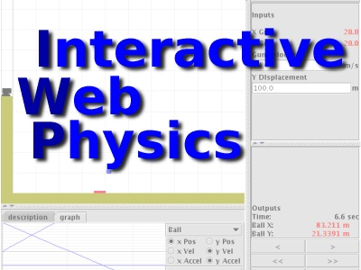
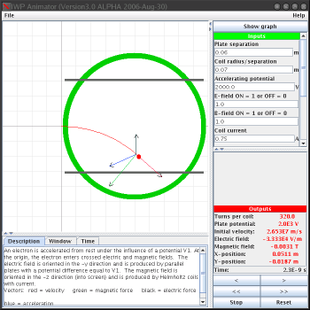
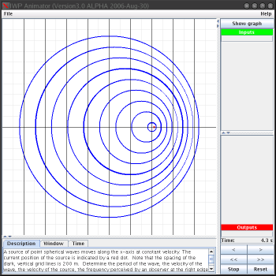
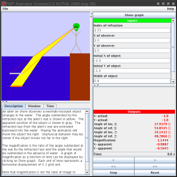

|  |
 |
| Latest Stable Software Release |
|---|
|
Download Version 2.0.2 Java .jar file (2006-Aug-31) This .jar can be double-clicked to run the Designer, or can be used as an applet in a web page to show the Animator. It is self-signed so will show a browser security warning if used as an applet: this is ok. You will need a Java Runtime Environment (JRE). You can download the latest JRE for windows at Java.com Free JRE Java Download |
| Links |
|
NCSSM Problem Server: Contains an applet mode view and lots of great user contributed problems. If you want to use IWP as an applet, this is a great place to see examples by using 'view source' in your browser. New 2007-Jan-18: IWP Windows Eclipse Sourceforge CVS HOWTO: New developers get up to speed quickly with Version 3 Eclipse Sourceforge Project Page: Development page with project information. |
| UNSTABLE Development Release |
|
Download Version 3.0 Alpha Java .jar file. Double click in Windows to run the full Designer. Download STUDENT Version 3.0 Alpha Java .jar file. The student version, when double clicked loads just the Animator. 3.0 adds packaged problems, refactored display + Euler calculations, bugfixes, TEST problems, and more. |
|
|
Interactive Web Physics is a Java, Web-based animation and problem designer tool. Anyone can quickly design mathematics or physics animations and simulations that run in a web browser. Unlike other solutions, no knowledge of programming is required.

{kind=link}
IWP Animator allows a student to fully explore and interact with a physics or mathematics problem: pause, rewind, and step through time as well as adjust the inputs to the problem to change the outcome. The Animator reads 'Problem Files' (XML files) containing parameter data that describes a situation that could be modeled with parametric equations or Euler + RK2 + RK4 simulations. Automatic graphing of displacement, velocity, and acceleration components is built in.
{kind=link}
IWP Designer is a companion tool that makes IWP XML Problem Files easy to create. Many unique types of problems can designed using a combination of primitive objects: mathematical inputs, outputs, 'solid' objects, vectors, window ranges, graph ranges, and time parameters. With relative ease, anyone can create an equation system that makes an animation move. The designer has visual menus that are responsive and easy to navigate.
{kind=link}
IWP's code has been under developement at the North Carolina School of Science and Mathematics since 1999. Responsibilites for maintenance and features have been passed down student to student for 5 years under the supervision of Dr. Loren Winters. The project itself doubles an educational programming experience for students that teaches Java Development, Source Control, Real World Debugging, and Team Software Development.